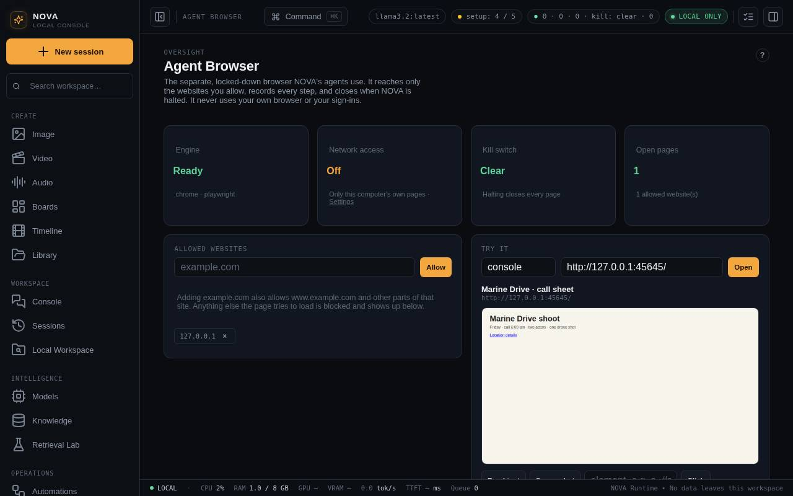

Agent Browser
The separate, locked-down browser Maataa's agents use — allow websites, try a page yourself, watch every action and blocked address, and close every page at once.
The agent browser is how Maataa's agents use websites. It is not your browser: it never sees your bookmarks, history or sign-ins, and each agent gets its own empty profile in Maataa's data folder. Open it from Agent Browser in the Operations group of the sidebar.

It is different from the two other browsers in Maataa:
- Provider Browser (Capabilities) is a window you use to sign in to AI providers.
- Build a page from an image checks pages in a browser with no network at all.
The status line
| Card | What it tells you |
|---|---|
| Engine | Ready shows which browser it drives (your installed Chrome, Edge, Brave or Chromium). Not available says what is missing. |
| Network access | Opening internet pages needs Settings > Privacy > Allow network access. Pages on this computer itself (localhost, 127.0.0.1) work without it. |
| Kill switch | Clear, or HALTED with a link to resume in Workbench. Halting closes every agent page at once. |
| Open pages | How many agent pages are open now, and how many websites are allowed. |
Allowed websites
Agents can open only websites on this list. Type a name such as example.com and press Allow; the × on a website removes it.
example.comalso allowswww.example.com,shop.example.comand other parts of the same site. It does not allowexample.netormyexample.com.- Everything a page loads is checked: images, scripts and fonts from other websites are blocked unless their website is allowed too. A page can therefore look unstyled until you allow the websites it depends on.
- Blocked addresses lists what was refused recently. Allow next to one adds it to the list.
Try it
Try it opens a page under exactly the same rules, so you can see what an agent would see.
- Allow the website first.
- Enter a web address (and, if you like, an agent name: each name has its own profile) and press Open.
- Maataa shows the page title and a picture of the page. Then:
- Read text shows the page's text. Type an element first (for example
mainor#price) to read just that part. - Screenshot takes a fresh picture.
- Click clicks the element you typed (for example
aor#more), then shows the result. - Type fills the element you typed (for example
input[name=q]) with the text next to it. - Close closes the page.
- Read text shows the page's text. Type an element first (for example
Password fields are refused unless an agent's policy explicitly allows that website.
Open pages and activity
- Open pages lists every agent page that is open, with Close for each and Close all pages for all of them. Closing pages does not halt the rest of Maataa.
- Recent activity lists pages opened, clicks, typing, reading and screenshots, with the result. What was typed is stored only as a fingerprint (hash), never as text.
- Downloads and uploads need an explicit approval every time, with the exact file named.
Requirements
- The desktop app includes the browser driver (Playwright's core, without browsers of its own) and drives the Chrome already on your Mac. If Chrome is not installed, the Engine card says so; Edge, Brave and Chromium work too.
- Browser mode (
npm start) uses the Playwright package in the source folder. - Set
NOVA_BROWSER=0before starting Maataa to turn the agent browser off completely.
The support report shows the engine it found.